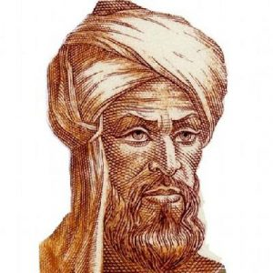

Hârizmî
| Hârizmî | |
|---|---|
|  | |
| Doğum | Muhammed bin Mûsâ el-Hârizmî 780 Harezm |
| Ölüm | 850 Bağdat, Irak |
| Milliyet | Fars |
| Dalı | Matematik, Gökbilim ve Coğrafya |
| Etkiledikleri | Ebu Kamil Şuca, Ebu Hanife Dinaveri, Ömer Hayyam |
| Harezmi sıfır rakamını (0) ve x bilinmeyenini kullandığı bilinen ilk kişidir. | |
Hârizmî (Farsça: الخوارزمي) ya da tam adıyla Ebû Ca'fer Muhammed bin Mûsâ el-Hârizmî, (d. 780, Harezm - ö. 850, Bağdat), Matematik, gökbilim, coğrafya ve algoritma alanlarında çalışmış Fars bilim insanı. Hârizmî 780 yılında Harezm bölgesinin Hive şehrinde dünyaya gelmiştir. 850 yılında Bağdat'ta ölmüştür.
Hint rakamları üzerine yaptığı çalışmaların Latince çevirileri ondalık konumsal sayı sistemini 12. yüzyılda batı dünyasına tanıtmıştır. El-Harezmī'nin Tamamlama ve Dengeleme ile Hesaplamaya Dair Özlü Kitabı doğrusal ve ikinci dereceden denklemlerin ilk sistematik çözümünü sunmuştur. Cebiri bağımsız bir disiplin olarak öğreten, "indirgeme" ve "dengeleme" (denklemin farklı taraflarındaki benzer terimlerin aynı tarafa alınarak sadeleştirilmesi) yöntemlerini tanıtan ilk kişi olduğu için, Harezmi cebrin atası ya da kurucusu olarak tanımlanmıştır. Cebir alanındaki çalışmaları, 16. yüzyıla kadar Avrupa üniversitelerinde temel matematik ders kitabı olarak kullanılmıştır. Batlamyus’un “Coğrafya” isimli yapıtını gözden geçirerek düzenlemiş, astronomi ve astroloji alanında çalışmalar yapmıştır. Bazı kelimeler el-Harezmī'nin matematiğe olan katkılarının önemini yansıtır. “Cebir” kelimesi ikinci dereceden denklemleri çözmek için kullandığı iki işlemden biri olan el-cebirden türemiştir. Algoritma kelimesi ise isminin Latin biçimi olan Algoritmi’den gelmektedir. Ayrıca ismi her ikisi de basamak anlamına gelen, (İspanyolca) guarismo ve (Portekizce) algarismo kelimelerinin kökenini oluşturur.
Hayatı
El-Harezmi'nin hayatına dair kesin olarak bilinen ayrıntı az sayıdadır. İranlı bir
ailede Büyük Horasan’ın Harezm şehrinde (modern Hive, Harezm bölgesi, Özbekistan) doğmuştur. 780 yılında doğduğu bazı kaynaklarda geçse de bu kesin değildir.
Muhammed ibn El-Tabari ona ismini Muḥammad ibn Musa el-Harezmi el-Majusi el-Kurtubalı(محمد بن موسى الخوارزميّ المجوسـيّ القطربّـليّ)
olarak verir. Öte yandan ismindeki Kurtubalı sıfatı, onun Bağdat'taki bir bağcılık bölgesi olan Kurtuba’dan (Qatrabbul) gelmiş olabileceğine işaret eder. Ancak Rashed başka bir görüş ileri sürmektedir:
Toomer, el-Harezmi’nin dini görüşü ile ilgili şöyle yazmaktadır: El-Tabari tarafından kendisine verilen bir başka sıfat olan "al-Majūsī", onun eski Zerdüşt dinine bağlı olduğuna işaret etmektedir. O zamanlarda İranlı bir insan için gerçek olması çok muhtemel olan bu görüşün aksine, Harezmi’nin Cebir adlı eserinde yazdığı dindar önsöz sebebiyle onun aslında Sünni bir Müslüman olduğunu göstermektedir.Bu sebeple yalnızca gençliğinde Zerdüşt olması muhtemeldir. Ibn el-Nedīm’in Kitāb al-Fihrist adlı eseri Harezmi’nin kısa bir biyografisiyle birlikte yaptığı çalışmaların bir listesini içermektedir. El-Harezmi çalışmalarının çoğunu 813 ile 833 yılları arasında gerçekleştirmiştir. Müslümanların İran’ı fethinden sonra, Bağdat bilimsel çalışmaların ve ticaretin merkezi oldu ve birçok tüccar ve bilim adamı Harezmi gibi Bağdat'a seyahat ettiler. Harezmi, halife El-Memun tarafından Bağdat'ta inşa edilmiş Bilgelik Evi’nde bilim adamı olarak Yunanca ve Sanskritçe bilimsel el yazmalarının tercümesini de içeren bilim ve matematik alanlarında çalışmalar yapmıştır.
Douglas Morton Dunlop, Harezmi’nin aslında üç Banū Mûsā'dan en büyüğü olan Muḥammad ibn Mûsā ibn Shākir ile aynı kişi olabileceği görüşündedir.
Horasan bölgesinde bulunan Harezm'de temel eğitimini alan Harezmi, gençliğinin ilk yıllarında Bağdat'taki ileri bilim atmosferinin varlığını öğrenir. İlmî konulara meraklı olan Harezmi bu konularda çalışma idealini gerçekleştirmek için Bağdat'a gelir ve yerleşir. Devrinde bilginleri himayesi ile meşhur olan Abbasi halifesi Mem'un Harezmi'deki ilim kabiliyetinden haberdar olunca onu kendisi tarafından Antik Mısır, Mezopotamya, Yunan ve Hint medeniyetlerine ait
eserlerle zenginleştirilmiş Bağdat Saray Kütüphanesi'nin idaresinde görevlendirilir.
Çalışmaları
El-Harezmī'nin matematik, coğrafya, astronomi ve haritacılığa katkısı, cebir ve trigonometride yeniliğin temelini oluşturdu. Doğrusal ve ikinci dereceden denklemleri çözmeye yönelik sistematik yaklaşımıyla cebrin ortaya çıkmasına neden olan kitabının başlığı şöyledir,
“Tamamlama ve Dengeleme ile Hesaplama Üzerine Özlü Kitap”.
820 yılında Harezmi tarafından yazılmış olan “Hint Rakamlarıyla Hesaplama Üzerine” isimli kitap Hint-Arap rakam sisteminin Ortadoğu ve Avrupa'ya yayılmasının ana sebebidir. Latinceye Algoritmi de numero Indorum olarak çevrilmiştir. Çalışmalarından bazıları Fars ve Babillerin astronomisi, Hint sayıları ve Yunan matematiği üzerine kuruludur. Harezmi, Batlamyus’un
Afrika ve Orta Doğu'yla ilgili verilerini sistematize etti ve düzeltti.
Bir diğer önemli kitap olan Kitab surat al-ard
(Dünya’nın görünüşü; Coğrafya olarak tercüme edildi),
Batlamyus’un Coğrafyası’ndaki yerlerin koordinatlarını temel
almakla birlikte, Akdeniz, Asya ve Afrika için var olan değerleri geliştirerek sunmuştur.
Halife el-Memun tarafından dünyanın çevresini belirlemek ve bir dünya haritası hazırlamak için
görevlendilen 70 kadar coğrafyacıya eşlik edip ve projeye yardım etmiştir.
12. yüzyılda eserlerinin Latince çevirileri vasıtasıyla Avrupa'ya yayılmasıyla birlikte
Avrupa'da matematiğin gelişimi üzerinde derin bir etkisi olmuştur.
Cebir alanındaki çalışmaları
Tamamlama ve Dengeleme ile Hesaplama Üzerine Özlü Kitap (Arapça: الكتاب المختصر في حساب الجبر والمقابلة al-Kitāb al-mukhtaṣar fī ḥisāb al-jabr wal-muqābala) 820 yılı dolaylarında yazılmış bir matematik kitabıdır. Bu kitap ticaret,ölçüm ve yasal miras alanlarında, çok geniş yelpazedeki problemlerin çözümü için örnekler ve uygulamalarla dolu popüler bir hesaplama çalışması olarak halife el-Memun’un teşviki ile yazılmıştır. “Cebir” terimi bu kitapta tanımlanan temel işlemlerden biri olan denklemlerden gelmektedir. (al-jabr, manası "restorasyon" dır, terimlerin birleştirilmesi veya sadeleştirilmesi için denklemin her iki tarafına bir sayı eklenmesi anlamına gelir). Bu eser aynı zamanda doğu ve batının ilk müstakil cebir kitabı olma özelliğini taşımaktadır. Bu kitap Robert of Chester (Segovia, 1145) ve daha sonra Gerard of Cremona tarafından Latinceye çevrilmiştir.
Özgün bir Arapça kopyası Oxford'da bulunmaktadır ve F. Rosen tarafından 1831 yılında
tercüme edilmiştir. Latince bir çevirisi Cambridge'de muhafaza edilmektedir.
Matematik alanındaki çalışmaları cebirin temelini oluşturmuştur.
Bir dönem bulunduğu Hindistan’da sayıları ifade etmek için harfler ya da heceler
yerine basamaklı sayı sisteminin kullanıldığını saptamıştır. Harezmî'nin bu konuda
yazdığı kitabın Algoritmi de numero Indorum adıyla Latinceye tercüme edilmesi sonucu,
sembollerden oluşan bu sistem ve sıfır, 12. yüzyılda batı dünyasına sunulmuştur.
Hesab-ül Cebir vel-Mukabele adlı kitabı, matematik tarihinde, birinci ve ikinci
dereceden denklemlerin sistematik çözümlerinin yer aldığı ilk eserdir. Bu nedenle
Harezmî (Diophantus ile birlikte) "Cebir'in babası" olarak da bilinir. İngilizcedeki
"algebra" ve bunun Türkçedeki karşılığı olan "cebir" sözcüğü, Harezmî'nin kitabındaki
ikinci dereceden denklemleri çözme yöntemlerinden biri olan "el-cebr"den gelmektedir
Harezmi sıfır rakamını (0) ve x bilinmeyenini kullandığı bilinen ilk kişidir.
El-Harezmī'nin doğrusal ve ikinci dereceden denklemleri
çözme yöntemi, denklemi altı standart formdan birine indirgeyerek başlar.
- Karelerin köklere eşitlenmesi (ax2 = bx)
- Karelerin sayıya eşitlenmesi (ax2 = c)
- Köklerin sayıya eşitlenmesi (bx = c)
- Karelerin ve sayı köklere eşitlenmesi (ax2 + c = bx)
- Köklerin ve sayı karelere eşitlenmesi (bx + c = ax2)
Yukarıdaki gösterimler, kitabın ele aldığı problem türleri için modern matematiksel gösterimi kullanır. Ancak Harezmi’nin zamanında bu matematiksel ifadelerin büyük çoğunluğu henüz bulunmamıştı, bu sebepten dolayı problemleri ve çözümlerini sunmak için basit metinler kullanmak zorunda kaldı.
Örneğin bir problemle ilgili şöyle yazmıştır (1831 deki bir çeviriden)
Eğer biri size "10'u iki parçaya ayırın: bir parçayı (10-x) kendisi ile çarpın; diğerinin (x)
seksenbir katı ile birbirine eşit olacaktır”. derse Hesaplama: Siz ona: "10'dan çıkartılıp kendisi ile çarpılan şey, yüz artı kare eksik yirmi şeydir, ve bu seksenbir şeye eşittir. Yirmi şeyi yüz ve kareden ayırıp seksenbir şeye eklenir. Yüz ve kare, yüzbir kök’e eşit olur. 101 kök’ü yarıya bölünce elli buçuk kök elde edilir. Bunu kendisiyle çarpınca ikibinbeşyüzelli ve bir çeyrek eder. Yüz’ü bunda çıkarırsak ikibindöryüzelli ve bir çeyrek kalır. Burdan kökü bulursak kırkdokuzbuçuk olur. Bunu kök’ün yarısı
olan ellibuçuk’dan çıkartınca geriye bir kalır ve bu iki parçadan biridir." deyin.
Bu işlem “şey” (شيء shayʾ) yerine modern gösterim olan “x” ifadesi
kullanılarak şu adımlar izlenerek yapılır;
Denklemin kökleri 'p' ve 'q' olsun, sonra
Dolayısıyla köklerden biri şu şekildedir:
Ebu Hanife Dineverî, Ebu Kamil Şüca bin Aslam, Ebu Muḥammad el-Adli, Abū Yūsuf al-Miṣṣīṣī, Abdülhamid İbni Türk,
Sind ibn Ali-Musa, Sahl ibn Bišr ve Şerafeddin al-Tusi’ninde ralarında bulunduğu birkaç yazar da Kitāb al-jabr
wal-muqābala adıyla metinler yayınlamışlardır. J. J. O'Conner ve E. F. Robertson, MacTutor History of Mathematics archive’ şöyle yazmışlardır:
« Belki de Arap matematiğindeki yapılan en önemli gelişmelerden biri el-Harezmi'nin çalışmaları
ile bu zamanlarda, yani cebrin miladıyla başladı. Bu yeni fikrin ne kadar kayda değer
olduğunun anlaşılması önemlidir. Bu, temelde geometri olan yunan matematiğinden
uzaklaşan devrimsel bir hareketti. Cebir, rasyonel sayılar, irrasyonel sayılar,
geometrik büyüklükler gibi tamamının "cebirsel nesneler" olarak ele alınmasına
izin veren birleştirici bir teoriydi. Matematiğe daha önce var olandan çok daha
geniş kapsamlı, yeni bir gelişim yolu sundu ve kendinden sonraki konulara yol
gösterici bir araç sağladı. Cebirsel düşüncenin ortaya çıkmasının bir diğer
önemli yanı da, matematiğin kendisine uygulanmasına daha önce olmayan bir
şekilde izin vermesiydi. »
R. Rashed ve Angela Armstrong şöyle yazar:
« Harezmi’nin metninin yalnızca Babil tabletlerinden değil, aynı zamanda
Diophantus Arithmetica'dan farklı olduğu görülür. Bundan böyle çözülmesi gereken bir
dizi problem yerine, basit terimlerle başlayan ve denklemler için,olası olan bütün
örneklerin kombinasyonlarını veren ve gerçek bir araştırmanın nesnesi olan bir
anlatımla ilgili yorumlamadır. Öte yandan, bir denklem fikri başlangıçta göründüğü
gibi, sadece bir problemin çözülmesinde değil aynı zamanda genel olarak sayısız
problemin tanımlamasında kullanılır. »
Aritmetik
Harezmi’nin ikinci temel çalışması orijinal Arapçası kaybolmuş fakat Latin tercümesi
günümüze ulaşmış olan aritmetik konusu üzerineydi. Bu tercüme büyük olasılıkla 12.
yüzyılda, aynı zamanda 1126 yılında astronomic tabloların da çevirisini yapmış
olan Adelard of Bath tarafından yapıldı.
Latince elyazmaları isimlendirilmemiştir, ancak başladıkları ilk iki sözcükle ifade edilir:
Dixit algorizmi ("yani El-Harezmi ") veya Algoritmi de numero Indorum
("Hint Hesap Sanatı üzerine el-Harezmī" ), Baldassarre Boncompagni'nin
1857'de çalışmasına verdiği isimdir. Orijinal Arapça başlığı muhtemelen
“Kitāb al-Jam‘ wat-Tafrīq bi-Ḥisāb al-Hind" ("Hint Hesaplamasına Göre Ekleme
ve Çıkarma Kitabı") idi. El-Harezmi’nin aritmetik çalışmaları, Hint matematiği
ile geliştirilen Hint-Arap rakamlarına dayanan Arap rakamlarını batı dünyasına
tanıtmaktan sorumludur. "Algoritma" terimi, el-Harezmi tarafından geliştirilen
Hint-Arap rakamlarıyla aritmetik gerçekleştirme tekniğinden türetilmiştir.
Hem "algoritma" hem de "algorizm", sırasıyla Harezmī'nin isminin Latince
formlarından, “Algoritmi” ve “Algorismi”den türetilmiştir.
Astronomi
El-Harezmi’nin Zīj el-Sindhind (Arapça: زيج السند هند, "Siddhanta'nın astronomik tabloları") adlı eseri, takvimsel ve astronomik hesaplamalara dayanan,içerisinde bir sinus değeri tablosu ile birlikte 116 adet takvimsel, astronomik ve astrolojik veriyi barındıran, yaklaşık 37 bölümden oluşan bir çalışmadır. Bu, Zijes olarak bilinen ve Hint astronomik yöntemlerine dayanan birçok Arapça Zijes'den ilkidir. Çalışma güneşin, ayın ve o dönemde bilinen beş gezegenin hareketlerini gösteren tablolar içerir. Bu eser İslam astronomisinde dönüm noktasını oluşturmuştur. Şimdiye dek Müslüman gök bilimciler öncelikli olarak araştırma yaklaşımını benimsemişler, başkalarının eserlerini tercüme edip keşfedilmiş bilgileri öğrenmişlerdi. Orijinal Arapça versiyon (820) kayıptır, ancak muhtemelen Adelard of Bath(Ocak 26, 1126). tarafından Latinceye çevrilen, İspanyol gökbilimci Maslamah İbn Ahmed el-Mecriti'nin (1000) bir versiyonu, günümüze ulaşmıştır. Günümüze ulaşan bu el yazması Latince çevirilerden dört tanesi; Bibliothèque publique (Chartres), Bibliothèque Mazarine (Paris), Biblioteca Nacional (Madrid) ve Bodleian Kütüphanesi (Oxford) 'da muhafaza edilmiştir.
Trigonometri
El-Harezmi’nin Zīj al-Sindhind adlı eseri ayrıca sinus ve kosinüs trigonometrik fonksiyonlarının tablolarını içerir. Küresel trigonometri ile ilgili bir tez de kendisine atfedilir.
Coğrafya
Harizmî Coğrafya alanında da tanınmış biridir ve coğrafya alanında birçok araştırmalar yapmıştır. Dağlar ve kum yuvaları konusunda ölçüm ve hesapları bulunmaktadır.
El-Harezmî'nin üçüncü önemli eseri, onun ‘Coğrafya’sı olarak da bilinen, 833 yılında bitirdiği Kitāb ūūrat el-Arḍ’dır (Arapça: كتاب صورة الأرض, "Dünyanın Tanımı Kitabı"). Bu çalışma Batlamyus’un 2. yüzyılda yazdığı Coğrafya’sının yeniden düzenlenmesi olup genel bir bilgilendirme ile birlikte şehirlere ait 2402 adet koordinatın listesini ve coğrafi özellikleri içermektedir. Kitāb Ṣūrat al-Arḍ’ın Strasbourg University Library’de muhafaza edilen yalnızca bir adet kopyası günümüze ulaşmıştır. Latince bir tercümesi Madrid'deki Biblioteca Nacional de España'da bulunmaktadır. Bu kitap, “hava bölgeleri” sırasına göre düzenlenmiş olan enlem ve boylam listesiyle başlar. Paul Gallez'in (şüpheli tartışması) işaret ettiği gibi, bu mükemmel sistem, varolan belgelerin neredeyse hiç okunmaz hale gelebilecek kadar kötü bir durumda bulunduğu birçok enlem ve boylamın çıkarımına olanak tanır. Bu eserin ne Arapça ne de Latince tercümesi, dünyanın haritasını içermez; ancak bununla birlikte, Hubert Daunicht eksik olan haritayı koordinatların listesinden yararlanarak yapmayı başardı. Daunicht, el yazması içerisindeki kıyı noktalarının enlem ve boylamlarını okumakta veya onları okunaklı olmayan içerikten çıkarmaktadır. Noktaları grafik kağıdına aktardı ve düz çizgi ile birbirine bağladı, kıyı şeridi orijinal haritadaki gibi yaklaşık olarak elde edildi. Daha sonra aynı işlemleri nehirler ve şehirler için uyguladı. El-Harezmi, Batlamyus’un Kanarya Adaları’ndan Akdeniz’in doğu kıyları boyunca yaptığı Akdeniz’in uzunluğu ile ilgili aşırı büyük olan öngörüleri düzeltti. Batlamyus bu uzunluğu 63 derece boylamdan fazla tahmin ederken, el-Harezmi neredeyse tam doğru olacak şekilde 50 derecelik bir boylam olarak tahmin etmiştir. Harezmi ayrıca, Atlantik ve Hint okyanuslarını, Batlamyus’un karalar tarafından kapatılmış denizler olarak tanımlamasının aksine,onları birer açık deniz kütlesi olarak tasvir etmiştir. Harezmi’nin baş meridyeni, Marinus ve Batlamyus’un kullandığı çizginin yaklaşık 10 ° doğusunda, Fortunate Isles’da idi. Çoğu Ortaçağ Müslüman atlası el-Harezmî'nin baş meridyenini kullanmaya devam etmiştir.
Yahudi takvimi
El-Harezmi içlerinde Risāla fi istikhrāj ta’rīkh al-yahūd (Arapça: رسالة في إستخراج تأريخ اليهود, "Yahudi Devrinin Çıkarılması") başlıklı bir yahudi takvimi tezi’ninde bulunduğu birçok farklı eser yazmıştır.19 yıllık ara geçiş döngüsü olan metonik döngüyü tanımlar; Tishrei'nin ayın ilk gününde haftanın hangi gününde düşeceğini belirleme kuralları; Anno Mundi veya Yahudi yılı ile Seleukos dönemi arasındaki süreyi hesaplar; İbrani takvimini kullanarak güneş ve aya ait ortalama boylamın belirlenmesine ilişkin kurallar verir. Benzer bulgular, el-Bîrûnî ve Maimonides'in eserlerinde bulunmuştur.
Diğer çalışmaları
İbn-i Nadim, arapça kitapların bir dizini olan Kitab-ı Fihrist adlı eserinde el-Harezmî’nin Kitab-ı Ta'rīkh (Arapça: كتاب التأريخ) isimli bir tarih kitabından bahseder. Original el yazması günümüze ulaşmamıştır; ancak, metropol piskoposu Mar Elyas bar Shinaya'nın 11. yüzyılda bulduğu bir kopyası Nusaybin’e ulaşmıştır.
Berlin, İstanbul, Taşkent, Kahire ve Paris'teki birçok Arapça el yazmasının içerdiği materyaller kesin olarak ya da belli olasılıkta Harezmi’den gelmiştir. İstanbul el yazması güneş saatleri hakkında bir yazı içerir; Fihrist, Harezmi’yi Kitāb ar-Rukhāma (Arabic: كتاب الرخامة) ile tanııtır. Mekke'nin yönünü belirleme gibi diğer yazmalar küresel astronomi üzerinedir.
Sabah genişliği (Ma‘rifat sa‘at al-mashriq fī kull balad) ve yükseklikten azimutun belirlenmesi (Ma‘rifat al-samt min qibal al-irtifā‘) üzerine yazılmış olan iki metin özel bir ilgiyi hak eder. Harezmi ayrıca usturlab yapımı kullanımı üzerine iki kitap yazmıştır.
Eserleri
Matematik ile ilgili eserleri
- El- Kitab'ul Muhtasar fi'l Hesab'il Cebri ve'l Mukabele
- Kitab al-Muhtasar fil Hisab el-Hind
- El-Mesahat
Matematik alanındaki çalışmaları cebrin temelini oluşturmuştur. Bir dönem bulunduğu Hindistan’da sayıları ifade etmek için harfler ya da heceler yerine basamaklı sayı sisteminin (onluk sistem) kullanıldığını saptamıştır. Harezmî'nin bu konuda yazdığı kitabın Algoritmi de numero Indorum adıyla Latinceye tercüme edilmesi sonucu, sembollerden oluşan bu sistem ve sıfır 12. yüzyılda batı dünyasına sunulmuştur.
Astronomi ile ilgili eserleri
- Zîc-ul Harezmî
- Kitab al-Amal bi'l Usturlab
- Kitab al-Amal bi'l Usturlab
Coğrafya ile ilgili eserleri
- Kitab surat al-arz
Tarih ile ilgili eserleri
- Kitab'ul Tarih